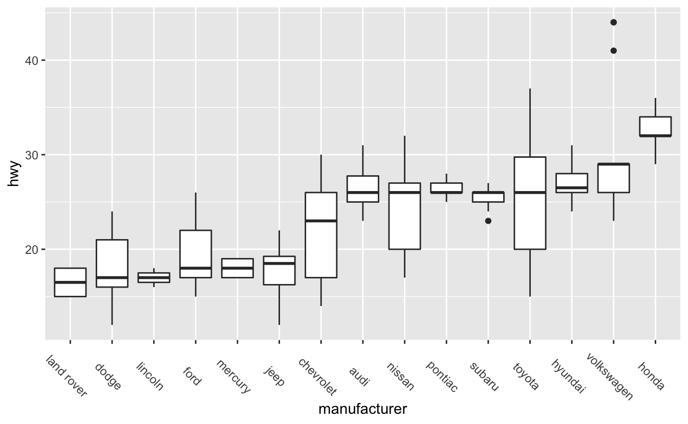
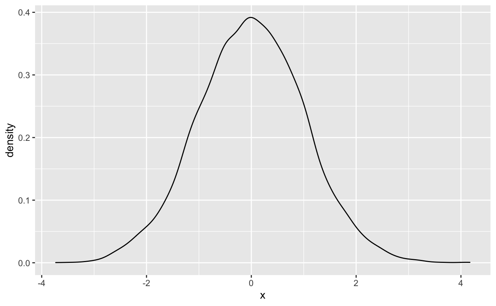
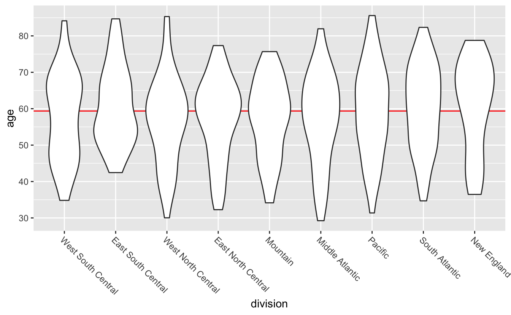

4 Distributions
library(tidyverse)
library(dcldata)4.1 Introduction
Take a look at the following cheat sheet sections before reading this chapter.
- Geoms:
geom_histogram()geom_freqpoly()geom_density()geom_boxplot()geom_violin()geom_vline()geom_hline()
A common first step when carrying out exploratory data analysis is examining distributions of continuous variables. For example, in this chapter, we’ll explore the ages of Congress members. To get a sense of what distributions can show, here are some possible hypotheses about the ages of Congress members (some more likely than others).
- There is no age bracket more populous than any another.
- The average age is around 60.
- There are a lot of Congress members who are around 30, and a lot who around 70.
Before we dive into the Congress data, however, we’ll introduce some mechanics. In the following sections, you’ll learn about layering geoms and the basics of theme().
4.2 Mechanics
4.2.1 Layering
The following plot shows the relationship of class to hwy using boxplots.
mpg %>%
mutate(class = fct_reorder(class, hwy)) %>%
ggplot(aes(class, hwy)) +
geom_boxplot()We’ll explain the specifics of boxplots later on in this chapter.
The black line in the middle of each box represents the median value for that class. It would also be helpful to see the median hwy value for all car classes. To display this on our plot, we’ll add a reference line using geom_hline(). geom_hline() creates horizontal lines. geom_vline(), which creates vertical lines, and geom_abline(), which creates lines with a given slope and intercept, are also useful for creating reference lines.
In geom_hline(), the yintercept argument controls the position of the horizontal line. In this case, we want a horizontal line indicating the median hwy value, so we’ll set yintercept equal to median(hwy, na.rm = TRUE).
mpg %>%
mutate(class = fct_reorder(class, hwy)) %>%
ggplot(aes(class, hwy)) +
geom_boxplot() +
geom_hline(aes(yintercept = median(hwy, na.rm = TRUE)), color = "red")Notice that the horizontal line is on top of the boxplots. We added geom_hline() our plot after geom_boxplot(), so the boxplots were drawn first, and then the line drawn on top. If we switch the order, the boxplots will lie on top of the line.
mpg %>%
mutate(class = fct_reorder(class, hwy)) %>%
ggplot(aes(class, hwy)) +
geom_hline(aes(yintercept = median(hwy, na.rm = TRUE)), color = "red") +
geom_boxplot()Placing the line on top of the boxplots can obscure information, so it’s generally better to place the line underneath.
You can add as many layers to a gpplot2 plot as you’d like. The different layers also don’t have to use the same data.
# Source: https://en.wikipedia.org/wiki/Corporate_average_fuel_economy
cafe_2008 <-
tribble(
~class, ~mpg,
"Passenger", 27.5,
"Truck", 22.4
)
mpg %>%
mutate(class = fct_reorder(class, hwy)) %>%
ggplot() +
geom_hline(aes(yintercept = mpg, color = class), data = cafe_2008) +
geom_boxplot(aes(class, hwy)) +
labs(color = "2008 CAFE\nstandard")4.2.2 theme()
Just like every ggplot2 plot has a coordinate system, every ggplot2 plot also has a theme. The theme controls the parts of the plot unrelated to the data, like the plot background color, tick mark length, and the color, size, and angle of the labeling text.
You can edit your plot’s theme with the theme() function. Themes have many components, and so theme() takes many arguments. Take a look at tidyverse page on themes to get a sense of what’s possible to change.
Two theme() arguments you’ll commonly use are axis.text.x and axis.text.y. These arguments control the appearance of the axis tick mark labels. Next, we’ll show you how to angle the x-axis tick mark labels to reduce overlap.
The x-axis labels overlap on the following visualization.
mpg %>%
mutate(manufacturer = fct_reorder(manufacturer, hwy)) %>%
ggplot(aes(manufacturer, hwy)) +
geom_boxplot()In the Discrete-continuous relationships chapter, you saw how we can flip a plot and put the labels on the y-axis. However, for reasons you’ll learn later on in this chapter, in this case it’s better to keep the boxplots oriented vertically.
Instead of putting the labels on the y-axis, we’ll use theme()’s axis.text.x argument to angle the labels.
mpg %>%
mutate(manufacturer = fct_reorder(manufacturer, hwy)) %>%
ggplot(aes(manufacturer, hwy)) +
geom_boxplot() +
theme(axis.text.x = element_text(angle = -45))
Take a look at the code. Notice that we had to use the function element_text(). element_text() is an element function. You’ll need element functions to change most of theme()’s arguments. If you look at themes()’s documentation, you’ll see that the arguments are arranged into groups. At the beginning of each group, there’s a reference to the appropriate element function. axis.text.x controls text, and uses element_text(), but axis.line controls the appearance of a line, and so uses element_line(). Like theme(), element_text() has many arguments. To change the angle of the text, we only needed one: angle.
Angling makes the axis text easier to read, but the text is now far away from the x-axis. The plot would be better if the labels were closer to the boxplots they represent. We can adjust the text justification with element_text()’s hjust argument.
mpg %>%
mutate(manufacturer = fct_reorder(manufacturer, hwy)) %>%
ggplot(aes(manufacturer, hwy)) +
geom_boxplot() +
theme(axis.text.x = element_text(angle = -45, hjust = 0))Setting hjust to 0 aligns text to the left, which causes our labels to move closer to x-axis. hjust = 1 aligns text right.
You’ll learn about the other element functions, and other useful theme() changes, later on.
4.3 One distribution
In this section, we’ll use data on Congress members serving in 2019.
congress
#> # A tibble: 535 x 7
#> name state division chamber party age gender
#> <chr> <chr> <chr> <chr> <chr> <dbl> <chr>
#> 1 Don Young AK Pacific House Republican 85.6 M
#> 2 Lisa Murkowski AK Pacific Senate Republican 61.6 F
#> 3 Dan Sullivan AK Pacific Senate Republican 54.2 M
#> 4 Terri Sewell AL East South Central House Democrat 54.0 F
#> 5 Robert Aderholt AL East South Central House Republican 53.5 M
#> 6 Mo Brooks AL East South Central House Republican 64.7 M
#> # … with 529 more rowsOne of our hypotheses from the introduction was the average Congress members is around 60. “Average” is, however, ambiguous. Do we mean the median or the mean?
For some data, the mean and median are close together, but that won’t always be the case. Means are sensitive to outliers, while medians are more robust. As an example, here’s a vector x.
x <- c(1, 2, 10, 15)The mean is the result of summing the elements of x and dividing by the length of x.
mean(x)
#> [1] 7The median represents the midpoint of x. Half of the data is greater than 6, and half is less than 6.
median(x)
#> [1] 6Right now, the mean and median of x are close together, but if we add an outlier the mean explodes, but the median only increases by a small amount.
x <- c(1, 2, 10, 15, 1e6)
mean(x)
#> [1] 2e+05
median(x)
#> [1] 10We’ll typically use medians instead of means for averages and references lines because of this behavior.
summary() will tell us the mean and median age in Congress.
summary(congress$age)
#> Min. 1st Qu. Median Mean 3rd Qu. Max.
#> 29.2 49.6 59.4 58.6 67.4 85.6The mean and median are close together, both between 58 and 60. Our hypothesis that the average age is 60 was pretty close.
Another interesting finding is that the House is slightly younger than the Senate.
congress %>%
group_by(chamber) %>%
summarize(median_age = median(age))
#> # A tibble: 2 x 2
#> chamber median_age
#> <chr> <dbl>
#> 1 House 58.0
#> 2 Senate 63.6There are also some very young Congress members,
congress %>%
filter(age < 32) %>%
arrange(age)
#> # A tibble: 3 x 7
#> name state division chamber party age gender
#> <chr> <chr> <chr> <chr> <chr> <dbl> <chr>
#> 1 Alexandria Ocasio-Cortez NY Middle Atlantic House Democr… 29.2 F
#> 2 Abby Finkenauer IA West North Central House Democr… 30.0 F
#> 3 Katie Hill CA Pacific House Democr… 31.4 Fand the oldest member is 85.
congress %>%
slice_max(age)
#> # A tibble: 1 x 7
#> name state division chamber party age gender
#> <chr> <chr> <chr> <chr> <chr> <dbl> <chr>
#> 1 Don Young AK Pacific House Republican 85.6 MThese summary calculations can only tell us so much about the data. We can get a richer understanding of the data by visualizing the age distribution, both for Congress as a whole and for the different chambers, states, parties, etc.
In this section, we’ll focus just on visualizing the distribution of ages for all of Congress. First, let’s try a histogram.
congress %>%
ggplot(aes(age)) +
geom_histogram()
#> `stat_bin()` using `bins = 30`. Pick better value with `binwidth`.There’s a message above our plot telling us that geom_histogram() is using bins = 30, but we should choose a better value of binwidth. Both the bins and binwidth arguments of geom_histogram() control the width of the bars you see on the plot. bins controls the number of bars. By default, geom_histogram() creates 30 bins/bars, and then divides up the data so that each bar spans the same number of whatever units are plotted along the x-axis. Here, those units are years, and each bar represents around 2 years. The binwidth argument of geom_histogram() allows you to set the width of the bars directly.
If you don’t specify either bins or binwidth when you use geom_histogram(), you will always get the message you see above. This message reminds you that it is always a good idea to think about your binwidth, and you will rarely want the default.
Let’s try some different binwidths.
congress %>%
ggplot(aes(age)) +
geom_histogram(binwidth = .1) +
stamp("Bad")A binwidth of 0.1 years is too small. Notice how it’s difficult to see the overall shape of the distribution and the plot appears very “peaky.” Also, many of the bars only represent a single person.
If we swing too far in the opposite direction, however, we’ll lose information.
congress %>%
ggplot(aes(x = age)) +
geom_histogram(binwidth = 20) +
stamp("Bad")20 years is too large of a chunk to be meaningful in this context.
In this case, the original 30 bins wasn’t too far off from ideal. We’ll make a minor adjustment so that each bin represents 5 years.
congress %>%
ggplot(aes(x = age)) +
geom_histogram(binwidth = 5, boundary = 0)The argument boundary = 0 directs the bin boundaries to be at 0 plus multiples of the binwidth; in this case, the bin boundaries are at 25, 30, 35, …, 90.
We can improve this histogram by adding a reference line at the median.
congress %>%
ggplot(aes(age)) +
geom_histogram(binwidth = 5, boundary = 0) +
geom_vline(aes(xintercept = median(age)), color = "red")For simple, one-dimensional distributions, histograms are generally a good bet. They are simple to interpret and can quickly give you a sense of the data.
However, there are other ways to visualize a single distribution. geom_freqpoly(), for example, is similar to geom_histogram(), but instead of encoding the number of people in each age bin with a bar, it uses points along a line.
congress %>%
ggplot(aes(age)) +
geom_freqpoly(binwidth = 5) +
geom_vline(aes(xintercept = median(age)), color = "red")You can think of frequency polygons as “histograms with lines.” Just as you have to pick a binwidth for histograms, you also have to pick one for frequency polygons.
If you’re just visualizing a single distribution, a histogram is probably better. The bars make it easier to connect counts with ages, as well as see the overall shape of the distribution. However, as you’ll see later, frequency polygons can be useful for visualizing multiple distributions at once.
geom_density() creates a density plot and is another option for visualizing a single distribution. Density plots are essentially smoothed histograms.
congress %>%
ggplot(aes(age)) +
geom_density()Density plots lack the fine-grained detail of frequency polygons. Sometimes, you’ll want to lose detail and focus on the overall trend, but, in other situations, density plots will hide important information. You should also avoid using density plots if you don’t have very much data. We therefore recommend using density plots only in specific scenarios.
One such scenario is visualizing simulated data.
set.seed(916)
sim_1 <- tibble(x = rnorm(n = 1e4))
sim_1 %>%
ggplot(aes(x)) +
geom_density() 
We’ll introduce a second scenario in the next section.
4.4 Multiple distributions
You’ll often want to visualize more than one distribution. For example, we might want to compare the age distributions for the different political parties in congress.
A first pass at a plot might involve using a histogram with fill to represent the different parties.
congress %>%
ggplot(aes(age, fill = party)) +
geom_histogram(binwidth = 5) +
scale_fill_discrete(direction = -1) +
stamp("Bad")Like stacked bar plots, stacked histograms aren’t a very good idea. Stacking makes it difficult to figure out how many Democrats are in each bin. The line
scale_fill_discrete(direction = -1)
changes the direction of the fill colors, making the Democrats blue and the Republicans red.
One option is to facet.
congress %>%
ggplot(aes(age)) +
geom_histogram(binwidth = 5) +
facet_grid(cols = vars(party)) +
stamp("Bad")The side-by-side histograms are difficult to compare. Vertical facets are much better.
congress %>%
ggplot(aes(age)) +
geom_histogram(binwidth = 5) +
facet_grid(rows = vars(party))Another option is overlaying frequency polygons.
congress %>%
ggplot(aes(age, color = party)) +
geom_freqpoly(binwidth = 5) +
scale_color_discrete(direction = -1)The frequency polygons make it even easier to compare the three distributions. Democrats and Republicans are similar, but Democrats are more spread out and are slightly older. The few members in the “Other” category are older than the average Democrat or Republican.
The same pattern works for visualizing the age distributions of the two chambers of Congress.
congress %>%
ggplot(aes(age, color = chamber)) +
geom_freqpoly(binwidth = 5)Interestingly, they both have a very similar shape. However, because the House has hundreds more members than the Senate, the distributions are far away from each other and it is difficult to directly compare them.
We can solve this issue by mapping the density of each age group to the y-axis. Like geom_histogram() and geom_bar(), geom_freqpoly() computes y-values from the data, and so you don’t need to supply a y aesthetic. By default, the y aesthetic is set to stat(count). stat(count) computes the number of items in each bin. In order to get geom_freqpoly() to plot densities instead of counts, we’ll set y = stat(density), which computes the density of items in each bin.
congress %>%
ggplot(aes(age, y = stat(density), color = chamber)) +
geom_freqpoly(binwidth = 5) Now, instead of mapping the number of people in each age bin to the y-axis, geom_freqpoly() uses the density of the people in each bin. It’s now clear that, although their shapes are similar, the House is a bit younger and more evenly distributed.
In the previous section, we mentioned a use case for geom_density(). One advantage of geom_density() is that you can fill in the curves, which makes them easier to see.
congress %>%
ggplot(aes(age, y = stat(density), color = chamber, fill = chamber )) +
geom_density() +
stamp("Bad")By default, the fill regions are opaque, so to be useful we need to change the transparency with alpha.
congress %>%
ggplot(aes(age, y = stat(density), color = chamber, fill = chamber )) +
geom_density(alpha = 0.5)This approach works best when you have sufficient data and the distributions can be distinguished from each other.
set.seed(916)
sim_2 <-
bind_rows(
tibble(mean = "0", x = rnorm(n = 1e4, mean = 0, sd = 1)),
tibble(mean = "1", x = rnorm(n = 1e5, mean = 5, sd = 2))
)
sim_2 %>%
ggplot(aes(x, color = mean, fill = mean)) +
geom_density(alpha = 0.5) 
geom_density(), like geom_freqpoly(), doesn’t require that you specify a y aesthetic. By default, the y aesthetic for geom_density() is stat(density).
In some situations, you’ll want to use stat(count) instead of stat(density). For example, notice that in sim_2, there are more observations in the “5” group than in the “0” group. stat(density) doesn’t show the number of observations in each group, so you can’t see this difference in the above plot. If we use stat(count), however, this difference is obvious.
sim_2 %>%
ggplot(aes(x, y = stat(count), color = mean, fill = mean)) +
geom_density(alpha = 0.5) Use stat(count) instead of stat(density) if you want to highlight the number of observations in each group. Otherwise, you can use the default stat(density).
If we want to visualize more than 2 or 3 distributions at once, we’ll need a new strategy. The variable division contains the U.S. Census division for each Congress member’s state. There are more values in division than in chamber or party, so the geom_freqpoly() plus color combination doesn’t work well.
congress %>%
ggplot(aes(age, stat(density), color = division)) +
geom_freqpoly(binwidth = 8) +
stamp("Bad")There are too many colors and the lines overlap too much for this visualization to be very useful.
Instead of encoding division with color, we can encode with position along the x-axis by using boxplots.
Boxplots summarize data.
Visual summaries like boxplots are helpful because they highlight important features of the data. Like any summary, however, they don’t provide a full picture of the data. Boxplots can’t fully convey the shape of the distribution in the same way that a histogram or density plot does. Sometimes this trade-off will be worth it, and sometimes it won’t.
Because there are so many different values in division, boxplots are a good strategy. Summarizing the data will allow us to see the differences between the divisions that were hidden in the geom_freqpoly() plot.
congress %>%
mutate(division = fct_reorder(division, age)) %>%
ggplot(aes(division, age)) +
geom_boxplot() +
stamp("Bad")
By now, you should be used to the overlapping labels problem. We could try putting the labels on the y-axis.
congress %>%
mutate(division = fct_reorder(division, age)) %>%
ggplot(aes(age, division)) +
geom_boxplot() +
stamp("Bad")However, flipping makes the median lines and box boundaries harder to compare, because it is more difficult to compare vertical line segments than horizontal ones.
Instead putting the labels on the y-axis, we can use theme() to angle the labels like you learned earlier.
congress %>%
mutate(division = fct_reorder(division, age)) %>%
ggplot(aes(division, age)) +
geom_boxplot() +
theme(axis.text.x = element_text(angle = -45, hjust = 0))
The final step is to add a reference line indicating the overall median age.
congress %>%
mutate(division = fct_reorder(division, age)) %>%
ggplot(aes(division, age)) +
geom_hline(aes(yintercept = median(age)), color = "red") +
geom_boxplot() +
theme(axis.text.x = element_text(angle = -45, hjust = 0))From this plot, you can see that the median ages don’t vary much across division. The size of the boxes are also similar. If you look at where in each box the median lines fall, however, you’ll notice that some are in the middle, some towards the top, and some towards the bottom. This suggests that the individual distributions are different shapes.
If you care about distribution shape, geom_violin() is an alternative to geom_boxplot().
congress %>%
mutate(division = fct_reorder(division, age)) %>%
ggplot(aes(division, age)) +
geom_hline(aes(yintercept = median(age)), color = "red") +
geom_violin() +
theme(axis.text.x = element_text(angle = -45, hjust = 0))
Violin plots are mirrored and flipped density plots. The thickness of the “violin” indicates how many values are in that area. With the violin plots, you can now tell that the distribution of ages look slightly different for different divisions. Note that, because violin plots are a form of density plot, they are only a good idea if you have sufficient data.
By default, geom_violin() doesn’t display the median of each group. You can add quantile lines using the draw_quantiles argument. To just draw median lines, set draw_quantiles to 0.5.
congress %>%
mutate(division = fct_reorder(division, age)) %>%
ggplot(aes(division, age)) +
geom_hline(aes(yintercept = median(age)), color = "red") +
geom_violin(draw_quantiles = 0.5) +
theme(axis.text.x = element_text(angle = -45, hjust = 0))(geom_violin() calculates the quantiles of the density estimate, which is not the same as the quantiles of the data used by quantile(), median(), and geom_boxplot(). This is why the 0.5 quantile lines aren’t perfectly ordered.)
Neither boxplots nor violin plots display the amount of data behind each plot, and so you can’t tell from the plots that New England has fewer representatives than the Pacific division. There are positives and negatives to every visualization decision you’ll make, and so the best geom will depend on what you want your plot to show.